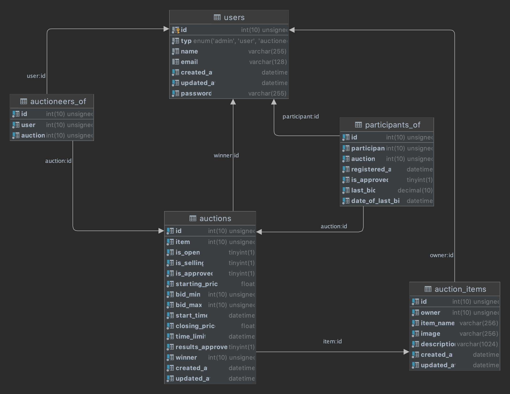

| Heslo | Role | |
|---|---|---|
| admin@bidmore.com | admin | Administrátor |
| liciator@bidmore.com | password | Liciátor |
| user@gmail.com | password | Uživatel |
IS implementuje všechny role a případy užití definované zadáním až na případné malé odchylky jako povolení registrace uživatele na aukci. Funkce schvalování účasti uživatele na aukci byla záměrně vynechána z důvodu způsobu implementace aukčního systému. V našem případě totiž role liciátora zastáva spíše správu samostatných aukcí. Jeho hlavní zodpovědností je v tomto případě pouze schvalování aukcí a potvrzování jejich výsledků. Možnost odebrání účastníka z aukce byla ovšem ponechána.
Původní diagram případů užití navržený před začatkem implementace je možné prohlednout zde. V procesu implementace vznikly drobné odchylky od původního návrhu z důvodu přívětivějšího použití informačního systému.
Prvním krokem v návrhu infornačního systému pro dánou úlohu bylo vytvaření ER diagramu, na kterém by se pak stavěl návrh databáze.
Původní ER diagramBěhem implementace se původní návrh lehce pozměnil, ovšem všechny důležité prvky entit a samotná struktura zůstaly.
Pro implementaci webové aplikace jsme zvolili framework Laravel. Je zde implementován backend ale také generování html obsahu stránek dle daných okolností. Využívá se zde MVC model......
Na straně klienta byla použita javascriptová knihovna jQuery. Provádí se zde validace zadaných dat ve formulářích, asynchronní komunikace se serverem a různé grafické animace.
Většina stylů byla implementovaná s pomocí frameworku Boostrap a doplněna vlastními styly v souboru general.css. Pro responzivní rozložení byl využit flexbox. Nehodil se ovšem na responzivní zobrazení seznamů, kde byly implementované dvě verze zobrazení a to pro desktop a pro mobilní zařizení. Pro přepínání mezi těmito zobrazeními bylo využito query @media. Při návrhu designu byla nejdříve zvolena základní barevná paleta a od ní se odvíjel návrh jednolivých zobrazení. Ikony a font byly použity z knihovny Google Fonts. Snahou bylo vytvořit čisté a jednoduché grafické rozhraní podle principů Material Design.
git clone https://github.com/vsokolov00/iis-project (repozitář zveřejněn až po odevzdání)composer install.env pokud chcete použit jinou databázi nebo AWS bucketphp artisan migratephp artisan storage:linkphp artisan serve
Projekt byl převážně koncipován na použití prohlížeče Google Chrome a Firefox. Na ostatních prohlížečích s omezenější podporou se obsah nemusí správně zobrazovat.
Pro obnovu hesla je potřebá obratit se na administratora, reset hesla přes email není možný